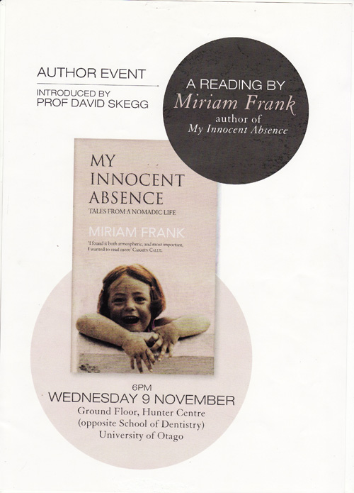

Presentations
MEDICAL
1978–1993 – Invited presentations of papers and lectures at international meetings and conferences at,
Bristol, Sheffield, Manchester and London, U.K.
Rotterdam, Holland
Washington and San Fracisco, USA
Rome, Italy
Mexico City and Ixtapa, Mexico
Beijing, Nanjing and Shanghai, China
Manila, The Philippines
Dundee, Scotland, and Cardiff, Wales, U.K.
Buenos Aires, Argentina
LITERARY TRANSLATION
1993-1994 - Launch, talks and readings, and presentation of the author Hector Tizon and his translated works at
Canning House, Belgrave Square, London,
and the London, Sheffield, Liverpool and St Andrews Universities, U.K.
Authored Works - MY INNOCENT ABSENCE
15.07.2010 Book Launch at Daunt Books (Chelsea), London, U.K.,
07.09.2010 Talk and Readings at The International Women’s Club, Goteborg, Sweden
01.10.2010 Refuge in Mexico, The Surreal Friends Conference, Sainsbury’s Centre for Visual Arts, Norwich, U.K.
02.12.2010 Talk and readings at Owl Bookshop, London, U.K.
28.02.2011 Lives Remembered at Jewish Book Week, London, U.K. Link Here
03.05.2011 Talk and Readings at Sorbell Community Centre, London, U.K.
01.09.2011 Talk and Readings at a Soiree, Nicole Milhaud’s Bateau Lavoir Studio, Paris, France
09.11.2011 Talk and Readings at The Hunter Center, Medical School, Dunedin, New Zealand
14.11.2011 Talk and Readings at Scorpio Books, Christchurch, New Zealand
17.01.2011 Talk and Readings at Millwood Gallery, Wellington, New Zealand
22.11.2011 Talk and Readings at Time Out Bookstore, Auckland, New Zealand
31.08.2012 My Mother, My Self, at Christchurch Writers Festival, New Zealand Link Here
02.10.2014 Presentation by the Town Mayor of My Innocent Absence and Kortokraks Ansichten
at Tempio Santa Croce, Tuscania, Italy. https://www.youtube.com/watch?v=666-oJdO-Ag
28.11.2014 Talk, readings and film Amanecer sobre España, dir. Louis Frank, at El Abanico, Athens, Greece
https://www.facebook.com/ABANICO.atenas/photos/gm.1586496788240495/727334614014630/
29.11.2014 Talk, readings and film, Recuerdos, dir Marcela Arteaga , at El Abanico, Athens Greece https://www.facebook.com/ABANICO.atenas/photos/gm.1586496788240495/727334614014630/
14.11.2015 Talk and readings, University of the Third Age, Auckland New Zealand
13.03.2016 Film and talk, The Will of the People, dir, Louis Frank, at The Bolivar Hall, London Link here
November, 2016 Talk and readings, University of the Third Age, Christchurch and Queenstown, New Zealand
27.09.2017 Illustrated talk, The Experience of Exile in Ancient Times and Today, at the Athens Centre, Greece
|  |
|
 |
 |
|